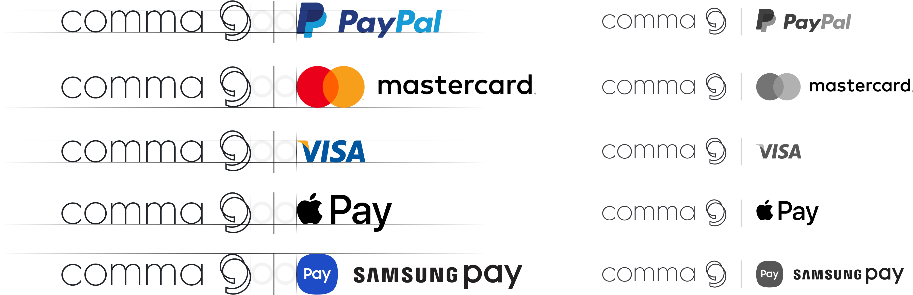

Logo
심볼과 로고타입이 결합된 시그니처 형태가 가장 기본이 되는 로고입니다.
로고는 심볼과 시그니처로 사용할 수 있으며, 일관된 커뮤니케이션을 위해 형태나 색상, 스타일의 변형,
타 그래픽 요소와의 결합 없이 그대로 사용해야 합니다.
Construction

곡선이 서로 얽히면서 각기 다른 흐름을 가진 쉼표들을 확인할 수 있는데 미시적(微視的)으로 보았을 때는 여러 개의 쉼표지만 거시적(巨視的)으로 보았을 때는 모두가 겹쳐 하나의 쉼표를 이루는 것을 알 수 있다.
원형 4개를 겹쳐 쉼표를 형상화한 것으로 원 형태의 왜곡 없이 본래 기하하적 균형을 유지하여 안정감을 주고 비대칭적 구성을 통해 감각적인 느낌을 주고자했다.
Clear Space
최소 여백은 주변의 다른 시각적 요소들과 분리시켜 로고의 가독성과 시각적 효과를 확보합니다.

심볼의 세로 길이의 1/2을 기준으로 사방의 최소 공간을 확보합니다.
Using Our Logo
일관된 브랜드 자산 운용을 위한 로고 규정입니다. 모양과 비율을 변형하거나, 회전, 장식할 수 없으며 색상을 임의로 변경하거나 효과를 추가할 수 없고,
토스 로고 내에 텍스트를 쓰거나 의인화할 수 없습니다.본 규정은 어떤 상황에서도 예외없이 유지되어야 합니다.
Partnership

심볼과 로고타입이 결합된 시그니처 형태가 가장 기본이 되는 로고이며, 심볼은 아이콘으로 사용할 수 있지만 로고타입만 사용하는것은 불가합니다.
① 파트너사 로고가 심볼 + 로고타입 조합인 경우 토스의 로고타입 가이드선을 기준으로 적용합니다.
② 심볼이 로고타입에 비해 상대적으로 큰 경우 심볼을 로고 분리선의 높이 기준으로 적용합니다.
③ 파트너사 로고가 워드마크인 경우 토스의 심볼 하부 가이드선을 기준으로 적용합니다.
④ 파트너사 로고가 상하 조합형인 경우 토스의 로고타입 가이드선을 기준으로 적용합니다..